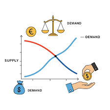

A student noticed that some families managed their money well while others constantly struggled financially. The difference was not always income. Often, it was the ability to make wise economic decisions. Economics helps us understand how people, households, businesses, and governments make choices when resources are limited.
Economics is the study of how scarce resources are allocated to satisfy unlimited wants. It helps students understand money, markets, budgeting, decision-making, trade, production, and financial planning.
As an SHS student, you may study topics such as:
Economics can lead to careers such as:
Many students think Economics is only about money. In reality, Economics teaches decision-making, resource management, planning, and problem-solving. These skills are useful in family life, business, entrepreneurship, and leadership.
This is only a small introduction. If you want to understand how programmes connect to university courses, careers, opportunities, and future success, get a copy of:
The guide designed to help students make informed decisions about their future and discover opportunities they may never have considered.